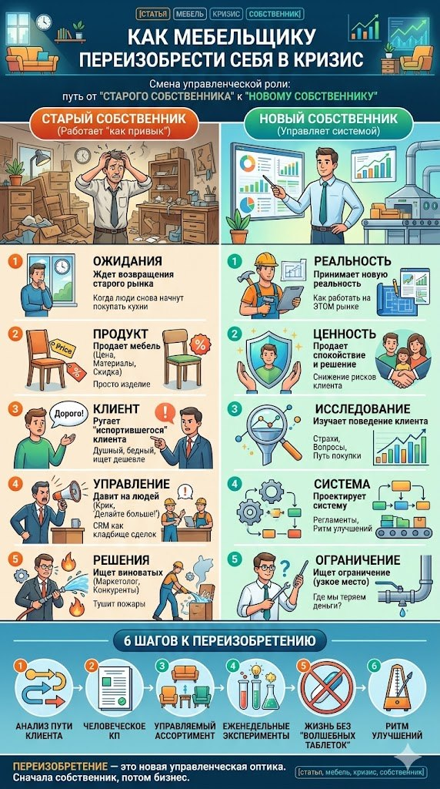

Можно сменить рекламу, CRM и менеджеров, но если за штурвалом всё тот же собственник с прежними привычками, любые новые инструменты он быстро превратит в старые. Это разговор о том, почему кризис требует не нового ассортимента, а нового собственника.
Есть красивая фраза: «Ты можешь переизобрести себя в любой момент своей жизни». Звучит как надпись на кружке у бизнес-тренера. Знаете, такая кружка обычно стоит рядом с ежедневником, последняя заполненная страница которого осталась где-то на двенадцатом января. Но сама мысль, если отскрести с неё мотивационную пыль, абсолютно правильная, особенно для мебельщиков и особенно сейчас.
Потому что нынешний кризис в мебели это не просто кризис спроса. Это кризис старой управленческой личности, ведь дело не только в том, что люди стали меньше покупать. И не только в том, что реклама подорожала, а маркетплейсы придавили всех, кто ростом пониже. И даже не в том, что клиент пошёл душный, считающий каждую копейку, с калькулятором наперевес. Проблема глубже: старый мебельщик пытается жить в новой реальности старыми мозгами, а рынок, гад такой, почему-то не согласен.

Карта статьи: старый собственник против нового и шесть шагов к переизобретению.
Кризис требует не нового ассортимента, а нового собственника
Когда у мебельной компании падают продажи, первый рефлекс понятный и почти спортивный: надо дать скидку, запустить рекламу, нанять продавца-звезду, выкатить новую коллекцию, выйти на маркетплейсы, сделать красивый сайт и наконец-то купить CRM, чтобы хаос стал хотя бы цифровым. Всё это и правда бывает нужно, но есть один неприятный момент.
Если старый собственник начнёт делать новые вещи, он очень быстро превратит их в старые. CRM станет кладбищем сделок, куда менеджеры заносят клиентов, как покойников, без подробностей. Новый сайт окажется электронной визиткой с кнопкой «оставьте заявку», на которую никто не нажимает. Новый продажник через месяц получит звание «опять не тот человек». Маркетплейс станет свежим способом продавать в минус, только теперь с красивой аналитикой. А реклама превратится в платную форму самообмана.
Потому что дело не в инструментах, а в том, кто берёт их в руки. Старый собственник использует новые инструменты как костыли для старых привычек, а новый и старые-то инструменты начинает использовать иначе. Вот в этом и есть смысл переизобретения. Не «заняться чем-то новым», а самому стать другим человеком внутри собственного бизнеса.
Старый мебельщик ждёт, когда рынок вернётся
Старый мебельщик живёт с ощущением, что нормальный рынок куда-то временно вышел. Как приличный клиент, который сказал «я подумаю» и пропал на полтора года, чтобы вернуться уже с кухней от конкурента и вопросом по гарантии.
Поэтому он ждёт - он Ждун. Ждёт, когда люди снова начнут покупать кухни за нормальные деньги, когда реклама опять подешевеет, когда клиенты перестанут сверять каждую ручку с Озоном, а дизайнеры снова начнут приводить заказы. Ждёт, когда менеджеры наконец «начнут продавать, а не просто сидеть». Ждёт, когда закончится весь этот дурдом.
Но кризис не обязательно пауза перед возвращением старого мира. Иногда кризис это его похороны, только без объявления, венков и оркестра. Просто однажды ты понимаешь: всё, поезд ушёл, а ты до сих пор стоишь на перроне и машешь ему вслед каталогом ЛДСП.
Новый мебельщик не ждёт возвращения прошлого рынка. Он задаёт себе другой вопрос: «Если этот рынок уже никогда не станет прежним, каким должен стать мой бизнес?»
И следом ещё один, куда менее приятный: «Каким должен стать я, чтобы этим бизнесом управлять?»
Старый мебельщик продаёт мебель. Новый снижает риск ошибки клиента
Раньше можно было продавать мебель как мебель. Вот кухня, вот шкаф, вот диван, вот стол, а вот фасады, вот фурнитура, вот цена, а еще и скидка, потому что без скидки у нас, похоже, действует какой-то внутренний религиозный запрет.
Сейчас всё иначе: клиент покупает не мебель, он покупает попытку не облажаться, потому что мебель дорогая, ошибка болезненная, квартира одна, ремонт уже вынес весь мозг, дизайнер сказал одно, муж другое, жена третье, а тёща вообще предложила «как у соседки Любы».
Поэтому клиент боится. Боится переплатить, ошибиться с размером, получить не то, что было на картинке, попасть на бесконечные сроки, нарваться на брак. Боится обнаружить, что «индивидуальный проект» на деле оказался индивидуальным наказанием. Боится заказать шкаф, который потом будет стоять в прихожей памятником его собственной управленческой глупости.
Старый мебельщик в ответ на всё это говорит: «У нас качественные материалы, большой опыт и индивидуальный подход». Новый говорит иначе: «Мы проведём вас от идеи до установки так, что вы будете понимать цену, сроки, риски и последствия каждого решения». Разница тут не косметическая, а принципиальная. Первый продаёт изделие, второй продаёт спокойствие. А в кризис спокойствие уходит с прилавка куда быстрее, чем рассказ про «фасады в плёнке, эмали, шпоне и ещё в чём-то, что клиент вообще-то не обязан понимать».
Старый мебельщик ругает клиента. Новый изучает его поведение
Любимый жанр старого мебельщика это монолог про испортившегося клиента. Клиенты стали бедные. Клиенты стали тупые. Клиенты хотят дорого, быстро и бесплатно, причём желательно одновременно. Клиенты только мозг выносят, уходят туда, где дешевле, и совершенно не понимают качества.
Новый мебельщик вместо обиды задаёт вопросы. Что именно клиент начал сравнивать и с кем? На каком этапе он отваливается? Какие страхи у него возникают ещё до замера? Почему он берёт коммерческое предложение и растворяется? Какие вопросы повторяются вообще у всех? Какие аргументы реально работают, а что клиент считает нашей внутренней мебельной поэзией, которую он слушать не нанимался?
Старый мебельщик обижается на рынок, новый его исследует. И вот почему это важно: клиент не обязан понимать мебельный бизнес, он и не обязан знать, чем хороша ваша кромка, почему нормальная фурнитура стоит денег, зачем нужен технолог и почему нельзя сделать «как на картинке, только в три раза дешевле и чтобы завтра». Перевести мебельный язык на человеческий это ваша работа, а не его.
Клиент не козёл, он просто не хочет оплачивать ваши внутренние непонятности. Хотя иногда, конечно, козёл, чего уж там, но строить на этом бизнес-модель довольно рискованно.
Старый мебельщик управляет людьми. Новый проектирует систему
В кризис старый собственник начинает давить на людей сильнее, будто кнопка «громче» когда-нибудь приведёт к кнопке «лучше». Менеджерам летит: «Продавайте активнее! Дожимайте! Почему мало звонков? Почему не закрыли? Почему клиент ушёл?» Производству: «Делайте быстрее! Почему опять косяк? Почему сроки плывут?» Маркетологу: «Где лиды? Почему реклама не работает? Почему заявки такие дорогие?» А потом всем вместе, как контрольный: «Вы что, не понимаете, что кризис?»
Они понимают, но просто от понимания кризиса заказы сами собой не появляются. Было бы, конечно, удобно: сотрудник осознал кризис, и вот уже три кухни в предоплате стоят в очереди на распил.
Новый собственник спрашивает совсем другое:
«Какая система должна быть выстроена, чтобы обычные люди давали приемлемый результат без ежедневного управленческого шаманства?»
Потому что бизнес не должен держаться на крике собственника. Крик это вообще плохая CRM: историю он хранит отвратительно, воронку не строит, зато атмосферу портит надёжно.
Новый мебельщик строит систему, и звучит это скучно ровно до тех пор, пока не начинает приносить деньги. Понятные этапы сделки и быстрый первый ответ. Нормальные шаблоны сообщений и человеческое коммерческое предложение. Фиксация причин отказа и разбор потерянных клиентов. Контроль сроков, утренние цифры, список ключевых гипотез и регулярные улучшения в продажах, производстве и сервисе. И всё это не из любви к бюрократии, а потому что без системы кризис превращает компанию в аквариум с пираньями: все нервничают, все кусаются, а воды с каждым днём всё меньше.
Старый мебельщик ищет виноватого. Новый ищет ограничение
В кризис ужасно хочется найти виноватого, это почти физиологическая потребность. Маркетолог плохо льёт трафик, продажники плохо продают, производство плохо делает, клиент плохо покупает, государство плохо государствует, а конкуренты плохо конкурируют, особенно вот эти, которые продают дешевле.
Беда в том, что поиск виноватого почти никогда не увеличивает прибыль. Он увеличивает количество совещаний, на которых все делают вид, что сейчас наконец скажут правду, но аккуратно, чтобы не лишиться премии.
Новый мебельщик ищет не виноватого, а ограничение. То есть задаёт один холодный вопрос: что прямо сейчас сильнее всего мешает бизнесу зарабатывать? Мало входящих? Проваленная конверсия из заявки в замер или из замера в договор? Слишком долгий расчёт и слишком сложное КП? Слишком широкий ассортимент и слишком много индивидуальных хотелок? Низкая маржа, гора переделок, дорогая реклама, медленная реакция менеджеров, хаос на стыке продаж и производства? Ограничение это то место, где бизнес теряет больше всего денег, времени или клиентов.
Старый собственник тушит всё подряд, новый выбирает главное. Потому что в кризис улучшать всё сразу невозможно, ведь это уже не управление, а управленческий оливье: всего намешано много, смысла мало, а наутро почему-то тяжело.
Старый мебельщик гордится опытом. Новый проверяет, не протух ли опыт
Опыт штука полезная, но в кризис у него появляется неприятное свойство: он превращается в якорь. Человек говорит «я двадцать лет в мебели», и это может означать две совершенно разные вещи.
Первое: человек двадцать лет учился, наблюдал, менялся, ошибался, делал выводы и стал сильнее. Второе: человек один год опыта аккуратно повторил двадцать раз подряд и теперь гордо охраняет музей собственных привычек, где экспонаты трогать руками нельзя.
Старый мебельщик уверен, что знает, как надо. Новый спрашивает: а это всё ещё работает? Работают ли старые скрипты и старые рекламные каналы? Живо ли старое УТП? Тянет ли салон в прежнем формате, держит ли ставка на «качество и индивидуальный подход», не пора ли пересобрать ассортимент и систему мотивации? Не превратилась ли привычка давать скидку в способ не объяснять ценность?
Опыт должен быть не памятником, а лабораторией! Иначе он становится деловым аналогом старого дивана: выбросить вроде жалко, а сидеть на нём уже невозможно.
Старый мебельщик хочет «сильную команду». Новый делает людей сильнее правилами игры
В кризис собственники любят повторять: «Нам нужны сильные люди». Звучит разумно. Но если приглядеться, под «сильным человеком» обычно подразумевают магическое существо, которое само всё поймёт, само наведёт порядок, само поднимет продажи, само подружит маркетинг с производством, само внедрит CRM, само воспитает менеджеров и при этом само не будет хотеть большую зарплату.
Таких людей мало, и они, как назло, уже заняты. А те, что свободны, стоят как хороший импортный станок, иногда даже как станок, который ещё и спорит :-).
Новый мебельщик не ждёт героя. Он создаёт правила игры, в которых нормальный обычный человек может давать результат. Менеджер при этом точно знает, что написать клиенту после заявки, когда позвонить, какие вопросы задать, как нащупать бюджет, как объяснить разницу в цене, когда вернуться с напоминанием и что вообще делать с сакраментальным «я подумаю». Технолог понимает, какие данные ему нужны от продаж, что нельзя запускать в работу, где прячутся типовые ошибки и какие решения надо согласовывать заранее, а не задним числом. А собственник понимает, на какие цифры он смотрит каждый день, какие решения принимает каждую неделю, какие гипотезы проверяет каждый месяц и какие задачи ему вообще нельзя трогать руками.
Переизобретение собственника начинается с отказа быть вечным героем. Потому что геройство в бизнесе чаще всего означает, что система не работает, а собственник вместо управления занят спасательными работами на руинах собственного управленческого дизайна.
Старый мебельщик продаёт скидкой. Новый продаёт смыслом и снижением риска
Скидка сама по себе не зло. Зло начинается тогда, когда скидка становится единственным языком, на котором компания умеет разговаривать с клиентом.
Сценарий знакомый до боли. Клиент морщится и роняет: «Дороговато». И старый мебельщик тут же выхватывает скидку, как пожарный топор, с криком души «сейчас порубим маржу, только не уходите». Но клиент далеко не всегда говорит «дороговато» потому, что у него нет денег. Часто он говорит так потому, что просто не понял разницу. Не понял, почему у вас дороже и в чём риск дешёвого варианта. Не понял, что входит в цену, как вы работаете, почему вам можно доверять, что будет после оплаты и кто ответит, если что-то пойдёт не так.
Скидка в этом случае ничего не решает. Она просто удешевляет непонимание.
Новый мебельщик не спешит резать цену, он сначала усиливает ценность. Показывает этапы работы и объясняет материалы человеческим языком. Даёт варианты комплектации и честно показывает, чем рискует тот, кто погнался за дешевизной. Собирает понятное КП, показывает реальные кейсы, заранее предупреждает о сложных местах и помогает клиенту принять решение без ощущения, что его сейчас дожмут коленом в прихожей.
Клиент, конечно, может уйти. Но если он уходит только потому, что где-то нашлось дешевле, это далеко не всегда трагедия. Иногда это просто санитарная обработка воронки. Не каждый клиент ваш, и в кризис особенно важно не путать выручку с прибылью, а заказ с победой. Некоторые заказы выгоднее проиграть на берегу, чем выиграть и потом месяцами материться уже в цеху.
Старый мебельщик хочет «больше заявок». Новый хочет понимать путь клиента
В кризис все хотят больше заявок, и это по-человечески понятно. Проблема в том, что многие мебельные компании не умеют толком обработать даже те заявки, которые уже есть.
Картина обычно такая. Заявка пришла, ответили с опозданием. Ответили без единого нормального вопроса. Вопрос всё же задали, но никуда не записали. Сделали КП и отправили его в виде технического трактата на четырёх листах. Клиент пропал, и никто не понял почему. Через неделю менеджер написал гениальное «вы подумали?». Клиент подумал. О другом поставщике.
Старый мебельщик уверен, что проблема наверху воронки, и просит «налить ещё лидов». Новый смотрит на весь путь целиком: откуда клиент пришёл, что увидел первым, что ему ответили и как быстро, какие задали вопросы, как объяснили цену, как выглядело КП, что произошло после его отправки, почему человек в итоге не купил и что можно поправить в следующей попытке.
Переизобретение тут простое: перестать думать «нам нужны лиды» и начать думать «нам нужно управлять клиентским маршрутом». Потому что лид это ещё не деньги. Лид это человек, который на секунду высунул голову из цифровых кустов. И если вы в этот самый момент запустили в него прайс-листом, не удивляйтесь, что голова обратно спряталась.
Старый мебельщик работает «как привык». Новый вводит ритм улучшений
В кризис нельзя раз в год собраться на стратегическую сессию, написать на флипчарте «рост продаж», нарисовать рядом бодрую стрелку вверх и разойтись с тёплым чувством, что бизнес почти спасён. Не спасён. Флипчарт, при всём уважении, не является органом управления.
Новый мебельщик вводит ритм. Каждое утро это короткий взгляд на цифры: заявки, замеры, договоры, выручка, маржа, просрочки, реклама, отказы, остатки, проблемы на производстве. Каждую неделю это разбор: что изменилось, где провалились, какую гипотезу проверяли, что сработало, что нет и что меняем со следующего понедельника. Каждый месяц это управленческий вывод: какой канал усиливаем, какой продукт убираем, какую услугу дорабатываем, какой процесс переписываем, кого учим, что автоматизируем и от чего наконец отказываемся.
Вот это и есть «новый ты». Не тот, кто вдохновился на конференции и три дня ходил другим человеком, а потом вернулся к привычному. А тот, кто реально изменил ритм принятия решений. Потому что личность собственника в бизнесе проявляется не в красивых словах на сайте, а в том, какие вопросы он задаёт изо дня в день.
Переизобрести себя значит сменить управленческую роль
Самая частая ошибка тут думать, будто переизобретение это «стать кем-то другим» в красивом духоподъёмном смысле. Ничего подобного! Для мебельщика это означает буквально сменить рабочую роль.
Был производственником, который лучше всех знает, как пилить, сверлить и кромить - стань архитектором бизнес-системы, в которой пилят и кромят без твоего постоянного присутствия. Был продавцом мебели, стань переводчиком клиентских страхов в понятные решения. Был главным пожарным, который геройски тушит то, что сам же по утрам и поджигает, стань проектировщиком процессов, где пожаров просто меньше. Был человеком, который всё знает, стань человеком, который быстрее всех учится. И, наконец, перестань быть владельцем салона, цеха или фабрики и стань владельцем управляемой модели, которая сама создаёт спрос, продаёт, исполняет и возвращает клиентов за повторным заказом.
Был «мы всегда так работали», стань «что из этого всё ещё работает, а что пора вынести на помойку рядом с образцами фасадов две тысячи четырнадцатого года».
Вот это и есть настоящее переизобретение. Не новый логотип, не новый сайт, не новая коллекция, не новый менеджер и даже не новая CRM, а новая управленческая оптика. Потому что старый ты способен купить новую дорогую CRM и преспокойно продолжить жить в бардаке, просто теперь подсвеченном дашбордами. А новый ты может открыть обычную таблицу в экселе и впервые за годы начать видеть собственный бизнес.
Что конкретно делать
Чтобы переизобретение не превратилось в философский кружок при мебельном цехе, ему нужны не озарения, а действия. Вот шесть, с которых разумно начать.
1. Перестать объяснять падение продаж одними внешними причинами
Да, рынок сложный, клиент осторожнее, деньги дороже, конкуренция жёстче. Всё так, но вопрос не в том, почему стало плохо, а в том, что именно вы можете изменить внутри своей системы. Плохой вопрос звучит как «когда рынок оживёт?». Хороший звучит как «что мы должны научиться делать, если рынок не оживёт ещё долго?».
2. Разобрать путь клиента руками
Возьмите последние тридцать-пятьдесят обращений и пройдите по каждому: откуда пришёл, что хотел, как быстро ему ответили, дошёл ли до замера, получил ли КП, купил или нет, а если нет, то почему и что можно было сделать иначе. Занятие смертельно скучное, зато до неприличия полезное. Бизнес вообще чаще спасают скучные вещи, а не харизма и «энергия лидера». Обычная таблица, заполненная без самообмана, спасала компаний больше, чем все мотивационные тренинги вместе взятые.
3. Переписать коммерческое предложение человеческим языком
КП существует не для того, чтобы продемонстрировать, как много вы знаете про мебель. Оно существует, чтобы помочь клиенту принять решение. Поэтому в нём нужны понятная структура, несколько вариантов там, где это уместно, объяснение разницы между ними, сроки и этапы, перечень того, что входит в цену и что в неё не входит, честное указание на возможные риски, список того, что требуется от клиента, и внятный следующий шаг. КП это не приложение к расчёту, это инструмент продажи. Если оно выглядит как распечатка из программы для людей, которые любят страдать, его надо переделывать.
4. Проверить ассортимент на управляемость
В кризис опасно тащить за собой весь ассортимент, который когда-то «вроде продавался». Одни позиции создают оборот, но не создают прибыль. Другие создают сложность и переделки. Третьи создают иллюзию широты выбора, от которой клиенту только хуже, потому что человек перед сорока вариантами кромки впадает не в восторг, а в паралич. А некоторые позиции живы лишь потому, что собственнику жалко признать очевидное: это уже мёртвая лошадь, и слезть с неё стоило бы пораньше. Ассортимент должен быть не большим. Он должен быть управляемым.
5. Ввести еженедельные эксперименты
Не нужно ждать великой стратегии, спущенной с горы. Каждую неделю можно проверять одну небольшую гипотезу: новый первый ответ клиенту, новый формат КП, новый скрипт возврата после расчёта, новый оффер для старых клиентов, пакет «быстрый проект», новую посадочную страницу, новый сценарий работы с дизайнерами или новый вариант комплектации без потери маржи. Маленькие эксперименты учат компанию быстрее, чем большие совещания. Хотя совещания, не спорю, создают приятное чувство занятости. Почти как спорт, только без пользы для тела.
6. Убрать из управления магическое мышление
Магическое мышление в мебельном бизнесе легко узнать по интонации. «Наймём сильного РОПа, и всё заработает». «Запустим рекламу, и пойдут заказы». «Сделаем сайт, и будет поток». «Поставим CRM, и появится порядок». «Снизим цену, и начнут покупать». Иногда такое и правда срабатывает. Но чаще нет, потому что любой инструмент должен быть встроен в систему. CRM без регламентов это просто электронный сарай. Реклама без воронки это способ покупать разочарование оптом. РОП без полномочий это дорогой свидетель хаоса. А скидка без экономики это путь к бодрой и уверенной убыточности. Новый мебельщик не верит в волшебные таблетки, он проектирует связки.
Главный вывод
Переизобрести себя мебельщику в кризис значит перестать быть человеком, который пытается вернуть старые результаты старыми способами. Даже если эти способы теперь нарядно упакованы в новые слова: CRM, нейросети, маркетплейсы, автоворонки, перформанс-маркетинг и прочую цифровую мишуру. Смысл не в том, чтобы начать делать новые вещи. Смысл в том, чтобы самому стать другим.
Потому что старый ты будет ждать рынок, ругать клиентов, давить на менеджеров, резать цену, тушить пожары, искать виноватых, скупать модные инструменты и приговаривать «мы всегда так работали». А новый ты будет изучать рынок, понимать клиента, строить систему, управлять маржой, искать ограничение, проверять гипотезы, упрощать путь покупки и держать ритм улучшений.
И вот тогда, что самое интересное, даже старые вещи начнут давать новые результаты. Старый звонок клиенту превратится в разговор о его рисках, а не в допрос «ну как, надумали?». Старое КП станет инструментом решения, а не техническим трактатом. Старый салон станет местом доверия, а не складом образцов. Старая таблица станет системой управления. Старый менеджер начнёт продавать лучше просто потому, что у него наконец появятся понятные правила игры. А старое производство станет меньше косячить, потому что хаос там перестанут ласково называть «индивидуальным подходом».
В кризис нельзя сначала переизобрести мебельный бизнес. Сначала собственнику придётся переизобрести себя. Потому что бизнес почти всегда дорастает до уровня личности своего владельца, а потом в неё же и упирается. Как шкаф в низкий потолок. И тут уже вопрос не в том, какой будет шкаф. Вопрос в том, готов ли собственник наконец поднять потолок у себя в голове.